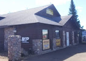

Docks & Lifts
Straightforward dock and lift help.
Sportsman’s Headquarters is an authorized dealer of Pier Pleasure and Porta-Docks products and carries DockRite waterfront systems. We help you choose a layout based on shoreline, water depth, and watercraft type.

Bring shoreline measurements and photos if you have them. It helps us recommend a layout faster.
Products & Options
- Piers
- Roll-out docks
- Sectional docks
- Roll-in docks
- Floating docks
- Multi-dock setups
- Post docks
- Accessories
- Boat lifts
- Pontoon lifts
- Personal watercraft lifts (PWC lifts)
Dealer Services
- Pier Pleasure dealer support
- Porta-Docks dealer support
- DockRite product guidance
- Layout planning for residential shorelines
- Scheduling for install, seasonal removal, and service
Bring shoreline photos and measurements if available. That lets us match dock sections and lift style more accurately.